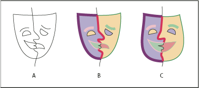
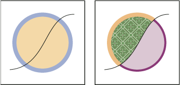

About Live Paint
Converting your artwork to Live Paint groups allows you to color them freely, as you would a drawing on canvas or paper. You can stroke each path segment with a different color and fill each enclosed path (note, not just closed paths) with a different color, pattern, or gradient.
Live Paint is an intuitive way to create colored drawings. It lets you use the full range of Illustrator’s vector drawing tools, but treats all the paths you draw as though they are on the same flat surface. That is, none of the paths is behind or in front of any other. Instead, the paths divide the drawing surface up into areas, any of which can be colored, regardless of whether the area is bounded by a single path or by segments of multiple paths. The result is that painting objects is like filling in a coloring book or using watercolors to paint a pencil sketch.
Once you’ve made a Live Paint group, each path remains fully editable. When you move or adjust a path’s shape, the colors that had been previously applied don’t just stay where they were, like they do in natural media paintings or image editing programs. Instead, Illustrator automatically reapplies them to the new regions that are formed by the edited paths.

- A.
- Original
- B.
- Live Paint group
- C.
- Paths adjusted, Live Painting reflows
The paintable parts of Live Paint groups are called edges and faces. An edge is the portion of a path between where it intersects with other paths. A face is the area enclosed by one or more edges. You can stroke edges and fill faces.
Take, for example, a circle with a line drawn across it. As a Live Paint group, the line (edge) dividing the circle creates two faces in the circle. You can fill each face and stroke each edge with a different color using the Live Paint Bucket tool.

For a video on using Live Paint, see www.adobe.com/go/vid0042.